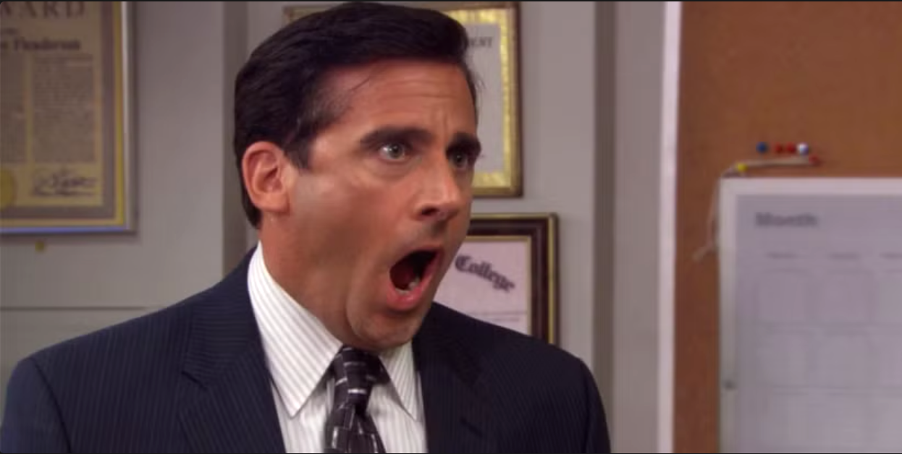

Michael Gary Scott is the World's Best Boss — and yes,
he has a mug that proves it (he bought it himself). As the
Regional Manager of Dunder Mifflin's Scranton branch,
Michael has spent his entire career turning a mid-level paper
company into the most emotionally chaotic workplace
in all of Northeastern Pennsylvania.
His management style can be described as 90% improv comedy
and 10% accidental success. He believes that a boss should be feared
and loved at the same time he wants people to be afraid of
how much they love him. His IQ is rumored to be somewhere
around Room Temperature2, but his emotional intelligence
(self-rated) is off the charts at Emax.
He once declared: "Would I rather be feared or loved? Easy.
Both. I want people to be afraid of how much they love me."
He has burned his foot on a George Foreman Grill,
driven his car into a lake* because GPS told him to, and
still considers himself the greatest manager in Dunder Mifflinhistory.

I'm pretty
Experience
Regional Manager - Dunder Mifflin, Scranton
(2001 - 2011) Managed a team of 15. Threw multiple office parties. Started zero fires (okay, one but Ryan started it).
Co-Founder & Co-Manager - The Michael Scott Paper Company
(2009 - 2009) Started a rival paper company with Pam and Ryan in a tiny closet. Ran out of money in 2 weeks. Got bought out. Called it a win.
Branch Manager (Briefly) - Dunder Mifflin, Stamford (Merged)
(2006 - 2006) Absorbed the Stamford branch. Lost every employee except Andy Bernard. Mission accomplished.
Salesman of the Year - Dunder Mifflin, Scranton
(1992 - 2001) Was actually a great salesman. This is the one thing he genuinely earned. Surprised everyone, including himself.
Skills
Skills
Years
That's What She Said (Timing)
20+
Throwing Office Parties Nobody Asked For
15
Improv Comedy (studied under no one)
18
Making HR's Life Miserable (Sorry Toby)
10
Microsoft PowerPoint (just clip art)
5
Negotiation (once got a discount at Chili's)
12
Cooking Bacon on a George Foreman Grill in Bed
1
Paper Sales
19
Declaring Bankruptcy (by yelling it loudly)
1
Projects
Threat Level Midnight - A full-length movie starring, written, directed, and produced by Michael Scott. Took 10 years to make. Featured the entire office. Golden Globe not yet received (still waiting).
The Dundies - Annual award ceremony hosted at Chili's. Awards include "Hottest in the Office" and "Don't Go in There After Me." Banned from Chili's after Season 2.
Diversity Day Training - A sensitivity training session that became the most insensitive event in corporate history. HR filed 17 complaints.
Michael Scott Paper Company - A startup run from a closet with a dream, a phone, and absolutely no business plan. Somehow got acquired.
Cafe Disco - Converted the Michael Scott Paper Company office into a disco/cafe. No food, no drinks, just a boombox and vibes. Lasted one afternoon.
Scott's Tots - Promised an entire class of kids free college tuition. Could not deliver. Gave them laptop batteries instead. Nobody has recovered.
"Somehow I Manage" - A management book currently in progress. Current word count: 4 (it's just the title).